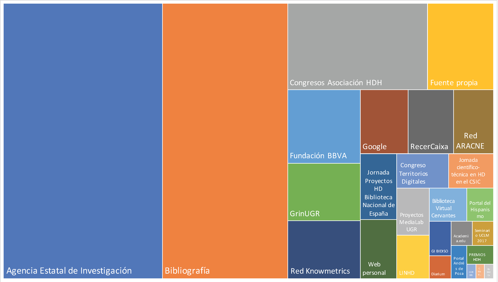

Introducción
Las Humanidades Digitales (HD) se han convertido en un campo de interés en España, especialmente en la última década, a pesar de haber llegado más tarde que en la mayoría de los demás países europeos. De hecho, representan una tendencia destacada en la investigación, ya sea como campo de estudio que como tema de financiación preferente. Al mismo tiempo, por su novedad, están siendo objeto de escrutinio por parte de la comunidad investigadora y de las instituciones gubernamentales que financian la investigación. El objetivo del estudio ha sido identificar a los investigadores que trabajan en el campo de las HD en España y explorar su financiación, sus afiliaciones institucionales, las temáticas de investigación y los recursos digitales desarrollados.
En el pasado se han promovido iniciativas similares, que han producido mapeos centrados en el ámbito internacional o nacional, algunos de los cuales siguen disponibles en línea, con diferencias que van desde la cobertura geográfica hasta el tipo de datos mapeados (Ortega; Eunice-Gutiérrez, 2014; Romero-Frías; Del-Barrio-García, 2014). Otros estudios sobre este tema han optado por un enfoque diferente, utilizando la bibliografía u otras fuentes para identificar las etapas más relevantes en la evolución y consolidación de esta disciplina en España (Rojas-Castro, 2013; González-Blanco, 2013; Spence; González-Blanco, 2014; Baraibar-Echeverria, 2014). El presente trabajo no pretende ser una revisión histórica exhaustiva, sino ofrecer una visión complementaria y actualizada del panorama de las HD en España, tomando en consideración datos recientes y fuentes de información no explotadas anteriormente.
Materiales y métodos
A continuación se describen los resultados de la investigación sobre el estado actual de las infraestructuras de investigación digital en España, entendidas como la combinación e integración entre los recursos de información digital, las herramientas analíticas y de visualización y la comunidad activa de investigadores, colaborando a través de proyectos de investigación, financiados por el sector público o privado. Por esta razón, hemos subdividido el objeto de la investigación en cinco entidades principales, concretamente: investigadores, proyectos, recursos, bibliografía y cursos de posgrado.
Nuestra metodología de recopilación de datos ha tenido una doble vertiente. Por un lado, hemos seleccionado manualmente información disponible en línea a partir de congresos, seminarios, convocatorias temáticas, mapas participativos, etc. Por el otro, hemos extraído información a partir de bases de datos existentes: publicaciones científicas en el campo de las HD presentes en Dialnet y en ÍnDICEs-CSIC y proyectos de investigación financiados a través de la Agencia Estatal de Investigación, seleccionados a través de una serie de palabras claves (Figura 1).
El volumen total de registros recopilados ha sido 1.359, distribuidos de la siguiente manera: 577 investigadores; 368 proyectos; 88 recursos; 9 cursos de posgrado y 8 revistas científicas. El conjunto de datos analizados se encuentra disponible en Acceso Abierto (https://doi.org/10.5281/zenodo.3893546), junto con los Jupiter Notebooks y el código Python para reproducir los análisis.
Figura 1. Fuentes de datos utilizadas en la investigación.
Resultados
Figura 2. Análisis de redes de disciplinas y temas de investigación. El tamaño de los nodos corresponde al número total de conexiones, el color a la comunidad y el grosor de las aristas al grado de conectividad entre parejas de nodos.
Figura 3. Peso relativo de cada departamento en los nueve centros de investigación principales. Para favorecer la comparación, se ha utilizado un histograma apilado.
Figura 4. Total de proyectos de investigación en HD y financiación recibida durante el período 1993-2019.
Figura 5. Recursos digitales clasificados según disciplina y tipología.
Conclusiones
A modo de conclusión, podemos destacar los siguientes aspectos: (1) la mayoría de las evidencias detectadas por otros estudios se han confirmado numéricamente; (2) los análisis cuantitativos de la financiación, una dimensión prácticamente inexplorada en las Humanidades, han demostrado ser extremadamente valiosos en la valoración de la evolución histórica de una disciplina científica; (3) se han establecido nuevas métricas y valores que constituyen una base de referencia para monitorear la evolución de las HD en España y favorecer las comparaciones, tanto a lo largo del tiempo como con otros contextos a nivel europeo e internacional.
Referencias bibliográficas